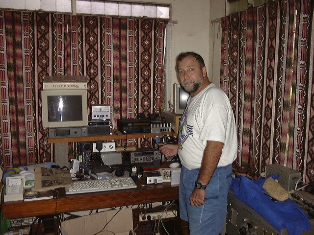

話題の局・QSL
FO3BM・French Polynesia



1989年にアクティブにAustral IsからQRVしていたFO3BM・Philippe.
Austral Isは1998年4月1日以降のQSOからDXCCのNewになった。
FO3BM・French Polynesia

1989年にアクティブにAustral IsからQRVしていたFO3BM・Philippe.
Austral Isは1998年4月1日以降のQSOからDXCCのNewになった。